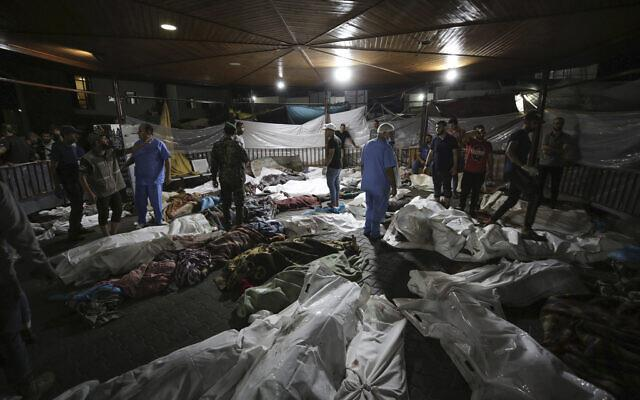
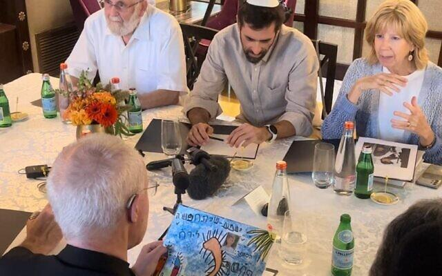

S'adressant à Jérusalem aux familles des personnes tuées et kidnappées, l’archevêque de Cantorbéry, Justin Welby, a déclaré qu'il n'y avait aucune preuve d’implication israélienne dans l'explosion meurtrière qui s’est produite dans un hôpital anglican de la Bande de Gaza. Par LAZAR BERMAN, 22 octobre 2023. (https://www.timesofisrael.com/archbishop-of-canterbury-accusing-israel-of- hospital-blast-is-blood-libel/).
L’archevêque de Cantorbéry Justin Welby a déclaré dimanche à Jérusalem qu’il n’y avait aucune raison de supposer qu’Israël était derrière l’explosion du 17 octobre dans un hôpital anglican de la ville de Gaza, et que propager de fausses accusations sur la responsabilité israélienne était une « diffamation de sang ». « Ne présumez pas qu’il s’agit d’Israël », a déclaré Welby au Times of Israel. "Vous n'avez aucune preuve." « Ne commencez pas à propager une nouvelle diffamation de sang », a-t-il déclaré dans un message adressé à ceux qui accusent Israël. Le dirigeant religieux anglican est venu en Israël pour une visite de solidarité après l'explosion à l'hôpital anglican Al-Ahli. Il a rencontré dimanche à l’hôtel King David la famille d’un soldat de première classe de Tsahal, âgé de 22 ans, d’origine britannique, tué au combat, le sergent Yosef Malachi Guedalia, ainsi que des membres de la famille Haran du kibboutz Be'eri, dont 8 sont portés disparus ou faits prisonniers, et dont 2 ont été tués le 7 octobre. Le 17 octobre, le diocèse épiscopal local de Jérusalem a publié une déclaration imputant « la perte de centaines de civils innocents » aux frappes aériennes israéliennes. Welby n'a pas entériné ce chiffre, déclarant simplement: « Je n'ai aucune idée du nombre de civils qu'il y avait, j'ai entendu tellement de chiffres différents. » Le ministère de la Santé à Gaza, dirigé par le Hamas, a immédiatement imputé l'explosion à une frappe aérienne israélienne. Cependant, Israël a produit des preuves démontrant que la cause de ce drame était due à l’échec de tir de roquette tirée depuis Gaza par le groupe terroriste palestinien du Jihad islamique, une évaluation approuvée par les États-Unis, qui ont déclaré disposer de leurs propres données à qi vont en ce sens. Les autorités sanitaires du Hamas estiment le nombre de morts à 500, un chiffre largement relayé dans le monde entier.

« Bien sûr, les familles palestiniennes protestent à grands cris », a déclaré Welby en réponse à une question des médias sur les victimes à Gaza. « Qui ne le ferait pas après avoir perdu ses enfants? Mais ne nous hâtons pas de juger et d’accuser, déplorons plutôt ce malheur et pleurons avec les proches des défunts..» L’archevêque a également dénoncé les manifestants pro-palestiniens qui ont défilé samedi à Londres et dans d’autres villes en accusant Israël de génocide. "Vous ne savez pas ce que vous dites", a déclaré Welby. « Attendez, réfléchissez, écoutez, pleurez, appelez à la paix. Cherchez des moyens pour que personne n'aille se coucher en craignant que sa maison soit cambriolée, que ses enfants soient massacrés, que ses proches soient pris en otages. Protestez contre cela. Pleurez sur les gens qui meurent sous les frappes aériennes. Quelques heures après sa rencontre avec les familles, Welby a tweeté un appel à un cessez-le-feu humanitaire à Gaza, ainsi qu'une déclaration émise samedi par des chefs des églises de Jérusalem condamnant Israël « dans les termes les plus extrêmes » pour une frappe du 19 octobre qui aurait joué un rôle deans le conflit. L'église orthodoxe Saint Porphyrios de Gaza s'est effondrée, ce qui, selon le communiqué, a tué au moins 18 personnes. Welby s'est montré attentif et visiblement ému au cours de son entretien de près d'une heure avec les familles Guedalia et Haran. "Les mots me manquent pour exprimer mon horreur, mon choc et le sentiment de la douleur extraordinaire que vous ressentez tous", a déclaré Welby.
« Comment puis-je entreprendre de vous expliquer ce que cela signifie pour vous? », a-t-il demandé aux familles. « Quvoulez-vous que j’entende? Que voulez-vous que je dise? « Par où vais-je commencer, avec espoir ou avec chagrin? » a demandé David Havron, dont huit membres de sa famille sont toujours portés disparus et présumés kidnappés par le Hamas. "S'il vous plaît, aidez si vous pouvez aider", a déclaré Havron. "J'ai deux soeurs. Je ne suis pas sûr que mes proches disparus soient otages. Ils sont absents. Nous implorons tous ceux qui peuvent aider, s’il vous plaît, aidez-nous. David Guedalia, dont le fils Yosef est tombé lors des combats à Kfar Aza, a déclaré que sa famille avait « la chance d'avoir son corps à enterrer ». « Yosef s’est entièrement investi dans tous les aspects de sa vie, qu’il s’agisse de la Torah, de ses amis, de sa famille, de moi, de notre foyer, de l’armée et du bien fait aux autres », a déclaré sa veuve, Senai, au Times of Israel. « Il nous manque, mais nous savons que, de là-haut, il fait tellement de bien pour nous tous. J’ai l’impression que le sol s’est ouvert sous mes pas – et je suis navré quand je pense qu’environ 1 600 autres familles ressentent la même chose. Nous sommes tous une seule famille et nous ressentons tous la douleur des autres. Et malgré tout, nous ne serions nulle part ailleurs. Yosef et Senai ont été mariés durant un an et quatre jours. "Vous vous en souviendrez toujours", a déclaré l’archevêque anglican Welby à Senai. « On ne s’en remet jamais. Vous continuez, vous construisez en direct. Il y a toujours un trou. Mais la douleur s’atténuera et des souvenirs plus heureux vous inonderont et noieront la douleur. Le dignitaire religieux a perdu sa fille Johanna, âgée de sept mois, dans un accident de voiture en 1983. La mère de Yosef, Dina, originaire de Manchester, a offert à Welby un dessin que son fils avait réalisé à la maternelle, puis une photo de lui durant son service dans l'unité d'élite de Duvdevan. "Il était doux, doux, gentil, aimant, délicat, attentionné, un bel enfant, qui était très, très, très professionnel dans son travail", a-t-elle déclaré. «Nos ennemis sont mauvais, un mal absolu», a déclaré Daniel. "Je me suis dit: avoir des ennemis qui sont du mal à l'état absolu signifie que nous sommes du bien à l'état absolu."

Le grand-père de Yosef, Isidore Zuckerbrod, né de survivants de l'Holocauste en Pologne quelques semaines après la chute de l'Allemagne nazie, a qualifié le 7 octobre de « pogrom ». « Il n'y a pas d'autre mot pour décrire ce qui s'est passé », a-t-il déclaré à Welby. « Il y a eu des pogroms en Pologne, en Europe. S’il y a une chose dont, dans mon imagination la plus folle, je n’imaginais pas qu’elle puisse se produire, c'est qu'il y ait des pogroms en Israël. Le 7 octobre, 2 500 terroristes ont franchi la frontière israélienne depuis la bande de Gaza dans une attaque dévastatrice sur plusieurs fronts. Au moins 1 400 personnes ont été tuées, dont plus de 1 000 civils, et plus de 200 personnes ont été enlevées et emmenées en otages à Gaza. Des familles entières ont été exécutées dans leurs maisons et plus de 260 personnes ont été massacrées lors d’un festival en plein air, la plupart au cours d’horribles actes de barbarie perpétrés par des terroristes, dans ce que le président américain Joe Biden a qualifié de « pire massacre du peuple juif depuis l’Holocauste ». Zuckerbrod a déclaré qu'il avait ressenti toute une série d'émotions en apprenant les attaques du Hamas et la mort de son petit-fils. « Ma première réaction a été la colère, car 80 ans après la Shoah nazie, nous serions toujours dans la même situation, voire pire », se souvient-il. « Ma deuxième réaction a été celle de la fierté. Ce que mon père aurait donné pour voir son petit-fils devenir un soldat combattant, capable de se dresser pour défendre son peuple.
"Ma troisième réaction est évidemment la douleur", a poursuivi Zuckerbord. « Ma propre douleur, la douleur de sa femme de mon petit-fils, de sa mère, de son père, de son frère, de sa belle-sœur, la douleur de la famille. » Zuckerbrod a simplement demandé à Welby de « nous soutenir ». « Soutenez-nous dans les médias. Soutenez-nous en déclarant que nous avons le droit de vivre en Israël… Notre propos est très très simple, nous sommes juifs, c'est notre foyer, c'est ici que nous vivons, et c'est ici que nous devons nous défendre, c'est ici que nous pouvons nous défendre. » En réponse, Welby a déclaré qu’il « était entièrement d’accord avec ces propos ». « Israël est un État de droit, il a droit à la légitime défense », a-t-il déclaré aux familles. « Il n’y a aucune équivalence entre Israël et le Hamas. » Il a également déclaré à Zuckerbrod que son père « aurait été tellement fier de voir [Yosef] se battre pour son foyer ». Assis à côté de Welby, le rabbin David Rosen, directeur des affaires interreligieuses de l'American Jewish Committee, a demandé à l'archevêque de recevoir ce qu'il a entendu en Israël et de « le partager, de le communiquer à un public plus large, d'utiliser le privilège que le Tout-Puissant lui a accordé, d’une manière qu’aucun de nous ne peut faire. « Le monde cherche souvent à conjurer en s’exprimant en certains termes, mais il n n’identifie pas le terrorisme pour ce qu’il est », a déclaré Rosen. "C'est un petit réconfort lorsque les dirigeants identifient le mal comme tel." Welby a également dénoncé l’attaque comme étant perverse: « C’est comme l’éclatement d’un volcan, c’est le mal dans sa forme la plus extrême. et je suis si heureux que vous l’ayez fait dans les termes qui sont les vôtres. Il a déclaré que sa première réaction en entendant parler des attentats du 7 octobre a été la colère, « parce que c'est une perte de vies. C'est la perte d'espoirs pour la région, c'est le début de la perte d'un très grand nombre d'autres vies qui vont être emportées par cette catastrophe.»
Texte original anglais traduit et adapté en français par M.R. Macina sur son compte Internet d’Academia.edu